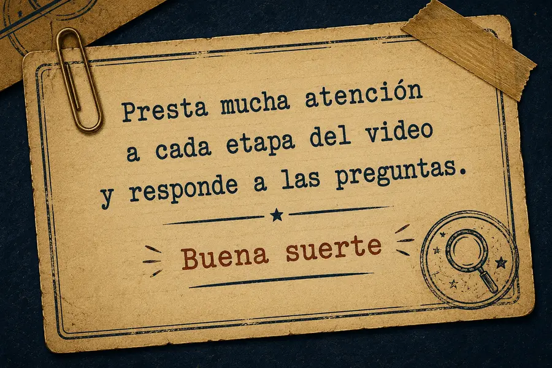
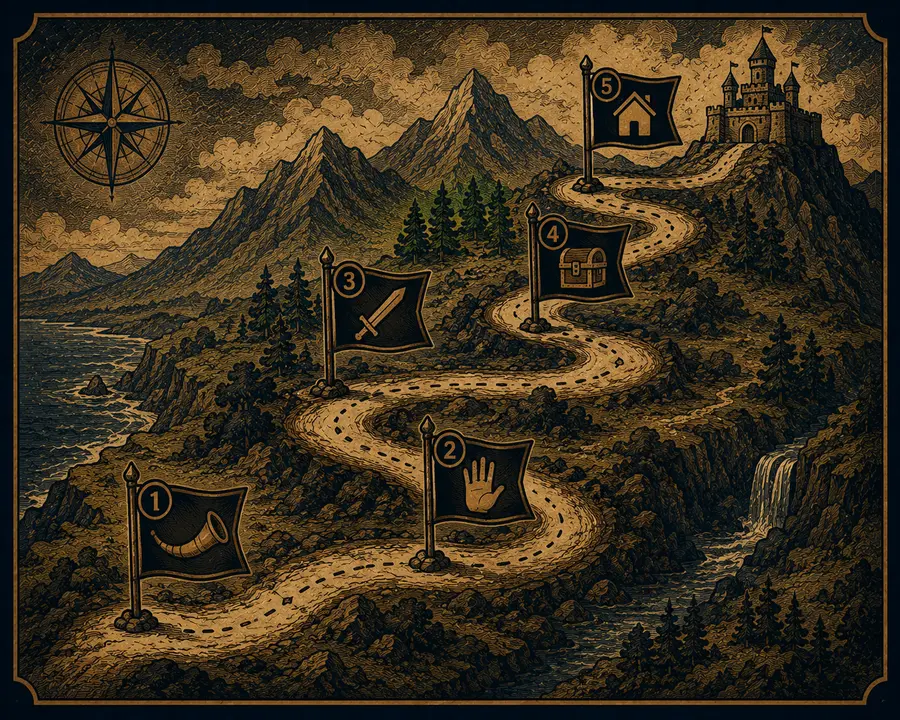

El Mapa del Monomito
Objetivo de esta pantalla: interpretar la estructura del de Campbell y ordenar sus etapas.

📽️ Video: Las etapas de Campbell
Detective jefe: "Un buen investigador reconoce el patrón detrás de cada historia. Ahora ordena las cinco etapas del camino del héroe."
Actividad 6 — Ordena el Camino del Héroe
Arrastra las tarjetas para ordenarlas de la primera a la última etapa del Monomito. Si usas teclado, cada tarjeta tiene botones ▲ / ▼ para moverla.
🏆 La Recompensa
🏠 El Retorno
📯 La Llamada
⚔️ Las Pruebas
🤝 La Ayuda
